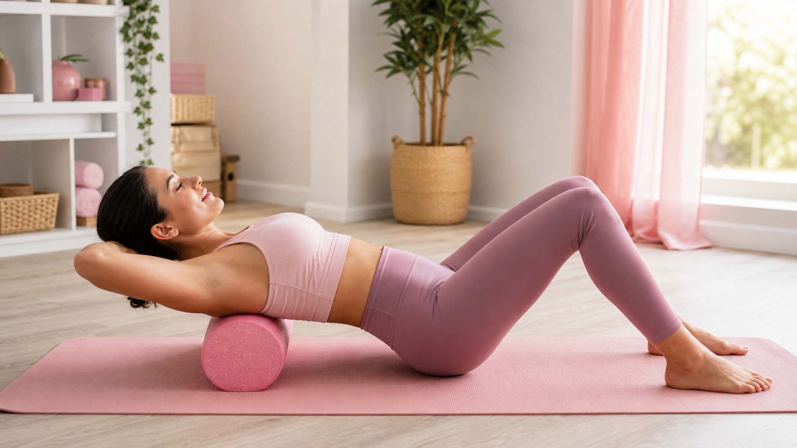

ストレッチポールで姿勢が変わる理由
「そもそもストレッチポールにどんな効果があるの？」という方は、まずストレッチポールの7つの効果まとめをご覧ください。この記事では姿勢改善に絞った具体的な使い方を解説します。
デスクワークやスマホ操作が続くと、背中が丸まり肩が内側に入る「巻き肩」や「猫背」になりがちです。
ストレッチポールは円柱形の形状を活かして背骨のS字カーブを自然に整え、縮んだ胸まわりの筋肉をゆるめる効果が期待できます。
特別なスキルは不要。ポールの上に乗るだけで重力が味方になり、硬くなった背中・肩まわりにアプローチできるのが最大のポイントです。
始める前に確認！ストレッチポール選びの3つのポイント
① 長さは98cm以上を選ぶ
頭から骨盤まで乗れるサイズが必要です。身長に関わらず98〜100cmが標準的で使いやすいサイズです。
② 硬さは「ソフト〜ミディアム」から
初心者は柔らかめのEVA素材がおすすめ。硬すぎると背骨に圧がかかりすぎて続けにくくなります。
③ 直径は14〜15cmが基本
直径が大きいほど背中が反りやすくなります。初めての方は14cmを目安にしてください。
🧘♀️ 1日10分！ストレッチポール 姿勢改善ルーティン
週3回・4週間継続を目安にしましょう
姿勢改善に効く！ストレッチポール 基本の使い方4ステップ
STEP 1｜ポールに乗って脱力（1分）
床にポールを縦に置き、頭・背骨・骨盤がポールに乗るように仰向けになります。
両腕はW字に広げて床に置き、30秒〜1分かけてゆっくり脱力。焦らずここで呼吸を整えましょう。
STEP 2｜胸まわりオープン（3分）
両腕をバンザイの方向へゆっくり上げ、床につくところまで伸ばします。
そのまま3〜5秒キープしてから元の位置へ戻す。これを10回繰り返すと、縮んだ大胸筋・小胸筋がほぐれてきます。
STEP 3｜背骨ローリング（3分）
膝を立てて足で床を軽く押し、ポールを背骨に沿って上下にゆっくり転がします。
特に肩甲骨の間は念入りに。痛みを感じる場合は無理せず圧を弱めてください。
STEP 4｜深呼吸で仕上げ（2分）
再びポールの上で静止し、鼻から4秒吸って口から6秒かけて吐く深呼吸を5回行います。
整えた背骨の位置を体に記憶させるイメージで行うと効果的です。
週3回・4週間で変化を感じるためのポイント
ストレッチポールは「毎日やらなければ」と気負う必要はありません。
週3回・1回10分を4週間（約12セッション）継続することで、体の使い方の変化を感じやすくなります。
続けやすいタイミングの目安は以下の通りです。
- 🌙 夜のお風呂後：筋肉がほぐれていて伸びやすい
- ☀️ 朝起きてすぐ：1日の姿勢リセットに
- 💻 デスクワーク後：固まった背中をすぐほぐせる
ストレッチポール使用時の注意点
効果を出しながら安全に使うために、以下の点を守りましょう。
- 腰や首に強い痛みがある場合は使用を控え、専門家に相談する
- ポールの上で勢いよく動かない（ゆっくりが基本）
- 妊娠中・産後間もない方は医師や助産師に確認してから使用する
- 硬い床の上に直接置かず、ヨガマットの上で使うと安定しやすい
姿勢改善と合わせて日常の動き方も見直したい方は、ダイエット習慣・ボディケアの関連記事もぜひ参考にしてみてください。
よくある質問
Q. ストレッチポールはどのくらいの期間で姿勢の変化を感じられますか？
個人差はありますが、週3回・1回10分のペースで4週間（約12セッション）続けると、肩まわりの動きやすさや背中の軽さを感じ始める方が多いです。姿勢は長年の習慣で作られるため、焦らず継続することが大切です。
Q. ストレッチポールと普通のフォームローラーは何が違うの？
一般的なフォームローラーは筋膜リリース（筋肉をほぐす）を主な目的とするのに対し、ストレッチポールは背骨のS字カーブを整えることに特化した設計です。表面が滑らかで体全体を乗せやすく、姿勢改善・リラクゼーション用途に向いています。目的に合わせて選びましょう。
Q. ストレッチポールの上に乗るとバランスが取れず怖いのですが？
最初は不安定に感じるのは自然なことです。慣れるまではポールの両側に折りたたんだバスタオルを置くと転がりにくくなり安心して使えます。壁際で行うのもおすすめです。